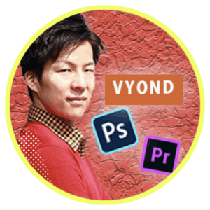

利用者の声
実際の利用者からもお褒めの言葉を頂いております。

Vyondを初めて1年になりますが、まだまだ知らなかったテクニックが多く明記されていて、大満足の内容です。Efficaもかなり便利で、制作時間が大幅に短縮されています。クオリティアップに、より多くの時間と思考を費やせるようになりました。早く良いものを作る為にもこの教材はオススメです。
シオ ＠農業×Vyondクリエイター

Efficaを使うことで今までメニューを開いて選択して使っていた機能が、キーボードのショートカットで瞬時に使えるようになったのは革命的でした。今ではいかにEfficaを活かしていくかを考えながら作業をするようになっています。これからもっと機能が増えるとのことで、Efficaと共に私自身も成長できるように頑張ります。
タナカノブ@Vyond動画編集✖︎先端IT

あなたがVYONDクリエイターなら10倍の値段で買っても損しない教材です。25個のVyond効率化テクニックを実践することで、今まで１動画に８時間程かかっていたのですが、半分の４時間でできるようになりました。Vyondで動画編集を始めて半年程ですが、もっと早く知りたいテクニックばかりでした。拡張機能のEfficaもとても簡単に使えますし、本当に便利で愛用しています。本教材のおかげで、YouTubeへの動画投稿の頻度を週１から週３に上げることができました。心から感謝しています。
OLめい@本要約YouTuber